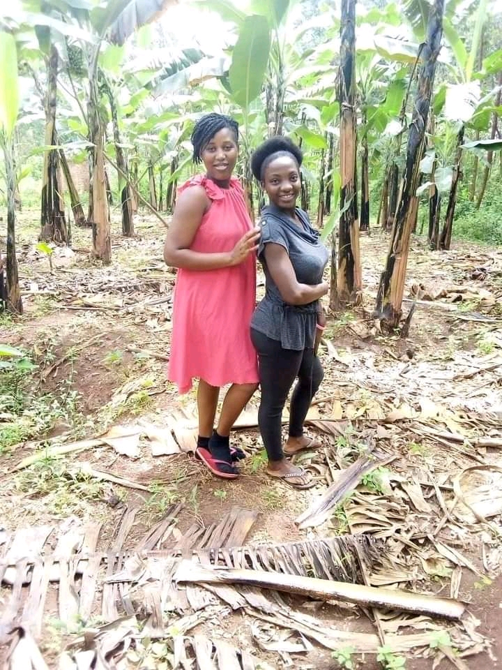
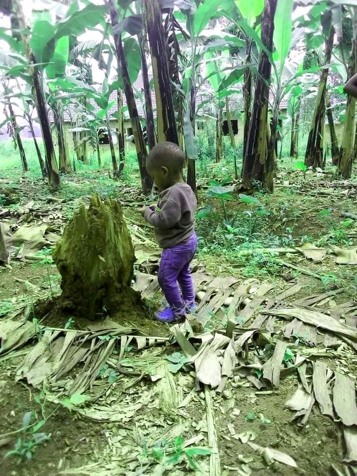
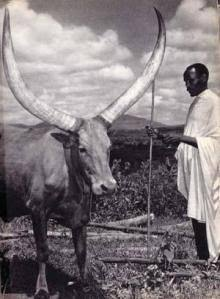
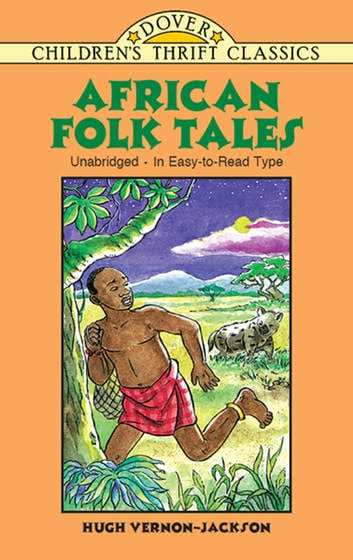
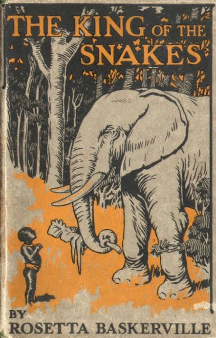

They speak a bantu language called Ruyankole. The individual is called Munyankolethe things belonging to muyankole like dance,dressing, are called kinyankole.there are two types of banyankole and they are the Bahima who are known as pastrolist they owned long horned Ankole cows and their wealth was determined on the number of cattle they had.They also carried out other activities to make there living better. And the Bairu who are known for agriculture.They all settled in areas with grass,water papyrus.though this land was diminished
 Morality is primarly a communal concer, folklore provides a repertoire of legends and tell
constructed to impress upon the proper through dilemmas contained in the stories.Storytelling
was a common means of entertainment.Ther were also riddles and proverbs in Banyankole. Special legends
surrounded the institution of the kingship, details of which provide a the Banyankole.Perhaps legendary
od Bachwezi.Legends contain many examples drawn from royalty,cattle, hunting, and othercentral
concerns of Banyankole. After work the parents and grandparents socialize children into the communty
throught stories(ebyevugo),(efumu)proverpsand riddle (ebiito).



Bahima men consume milk and butter.Milking wasfor men while women did the women. THe bairu consumed mean, milletbread ,milk buttermilk was drunk by wommen and children. then used as a sauce,"enshabwe" and millet bread was dipped in it. the Mugabe drunk milk four times in the morning and evening.
Among the Babima,the major occupation was looking after cattle. Meanwhile the herders movedlong distances to search for pasture. Women cooked foo,predominantly meat, for thier husbands. Girls garthered firewood caring for babies and other activities, boys were responsible for building homes. In bairu both were responsible for agriculture labor, millet was the main food planted and beans, plantains sweet, potatoes. Children chased birds form crops, they made scarecrows form grass and sticks.And wife and husband slept in a hat in their fields to protect their crop form animals and birds.
Reaping was done by both men and women,women did the winnowing.Reaping was done when there was little work like parties and marriage ceremonies. The Bairu women did little work.
The Bairu built traditional homes about 4.25 to5.5m in diameter(14-18ft) (9-10ft) tall and shaped in a beehive shape.They used poles,millet stems,papyrus,stones,mad and grass there was also a fire place made of very large stones.